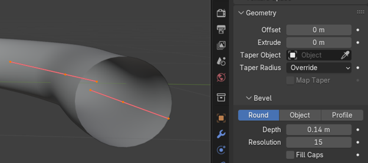

~1 Drawing a Curve~
8/25/2025
Setting Your Options in the Property Panel
Last Operation Box for “Convert To”
What is a Curve?
That’s easy. A curve is a line that has a curve or bend in it. We normally make these curves by using control points; usually this is done, by using something like a Bezier Curve. However, in this tutorial, I will be cheating just a bit and showing you how we can bring in the Bezier curve, throw it away, and then just draw the curve we want. This method might be the simplest one to start with.
A Control Point
So, what is a control point? We actually have three control points in our illustration below. Each vertex that is on the Bezier line, is considered a control point, and it can be used to bend and shape the curve into something that we actually want. There is a center control point, and then two on each side of the center point. These two end points control the handles of the Bezier, and it is these handles that we can swing around, to tweak the way the curve looks.
Creating a Curve
To start off with, we do not need the cube. So, Delete the Cube.
Hit the 1 key on the numpad to go into front view.

Hit shift – A and add a Bezier Curve to the Viewport.
Hit the 7 key on the Numpad to view the curve from the top
Go into Edit mode; you will notice that your menu dropdown (when you have a curve as an object) only has 2 Workspace options. These two options will be Object and Edit Mode. We don’t really do anything with a curve in the other workspaces, so to represent them are unnecessary.
This is what this curve looks like in Edit Mode. You can see the handles of the Bezier curve - contraption very easily in this illustration, but the curve is in there (in black) underneath of these red handles thing.
Hit X, and choose Delete-Vertices.
Drawing A Curve
Switch to the Draw tool. The Draw tool is different from the Annotation tool, because as you can see from the tool icon, it will have those Bezier points on them. If you had not brought a Bezier curve into this Edit workspace, and just used a cube, you would not even have access to this draw tool. So, make sure you start out with the Bezier Curve, and as described above (use X to delete the Vertices).

Then at the top of the Viewport Set the Projection Method to Surface.
Start to Draw out your curve. Your curve will look like this when you finish drawing it, and let go of the mouse. While you are drawing the curve, it will look like a white drawing line.
Setting Your Options in the Property Panel
Open the Data Tab, in the Property panel on the right, for the Curve. You will only see this tab if you have a curve selected, so make sure your curve is selected.
Now scroll down in the panel until you see the Geometry section.
Depth
Scroll down further in the Geometry section to find Depth. Increase the Depth setting.
You can increase the depth as much as you want
Resolution
Resolution Set to 4 . The 4 given here is what Blender started the resolution setting to begin with.
Now we can turn the Resolution up to 15. Look at those sharp edges on the circular opening now. This is the resolution setting on the Bevel, as you can see by the heading of this section. And this will only affect the circular opening of the tube.
Fill Caps
We can Check the box for Fill Caps, this will close the end of the curve.
Smoothing out the Curve
As I stated earlier, the resolution setting under Bevel, only effects the circular opening to the curve. To make the full length of the curve look smoother, we actually need another section of the Data tab. The long tube section of the curve is referred to in Blender as the “Spline”
To Smooth out the Curve (Spline), we need to go to the Section called Active Spline. The Resolution option starts out with a setting of 12.
We want to turn the Resolution setting up to 64, which is the highest it will go.
Convert a Curve to Mesh
We can turn our curve back into a mesh, once we have finished with it. But we will need to take the curve back into Object mode to do this.
Right click on the Object and select Convert To – Mesh
Last Operation Box for “Convert To”
We can choose to keep the original in the Last operation dialog box. You might want to do this if you want to make changes to the curve. This will give the curve that we drew with all the handles, and make a mesh copy of it.

You know that you have changed it into a mesh if you take it into Edit Mode and it looks like this.
Note- It isn’t actually necessary to change a curve into a mesh object, before you can add a material to it, but you can change the curve, if you want it to be a solid object. The difference between a curve and a solid object is that a solid object is like a cube or a sphere. It has multiple vertices and faces, while a curve is a flexible path, and is used to create more complex shapes.
Adding a Material
Go to the Material tab. Hit the New Button to create a new material.
Change the Name of the Material. I named this one RED, because my curve will be Red.
Important! Make sure you are either in Material, or Render Mode to see the color on the Object.
Change your color swatch
View your Curve
Ok, this is as good of a stopping point as any on Drawing a curve. And it is a good start to get you where you want to go with these curved shapes.